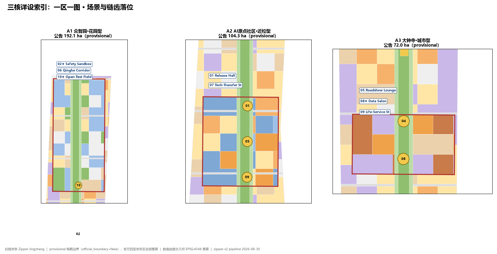
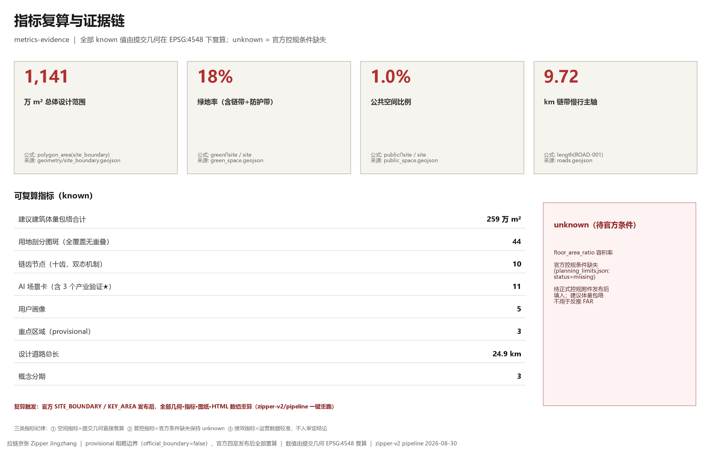

拉链京张 Zipper Jingzhang
A conceptual urban design proposal that responds to the three openings of the Jing-Zhang corridor with a 'zipper' mechanism: the Chain Band stitches, the three cores interlock, the Ten Teeth connect, and the Zipper Head orchestrates; all geometry and metrics are recalculable from the submitted layers, based on the provisional rough boundary, to be recalculated in full once official data is released.
Zipper Jingzhang
Design Basis and Materials List
This proposal takes the Prequalification Announcement for the International Open Call for Urban Design of the Centennial Jing-Zhang AI Innovation Belt as its primary basis, and takes the provisional rough boundary, key areas, land-use enumerations, metric limits and source registry registered in brief/site-package/ as its machine-readable basis; all design judgments are decomposed into traceable sources, recalculable metrics, verifiable layers and human-reviewable assumptions Source Source. The name "Zipper Jingzhang" is at once the overall concept, the naming system and the visual identity direction: the essential difference between a zipper and "stitching" is that a zipper can be unzipped again — precisely carrying the core philosophy of openable heritage display; wording throughout uses "opening / interlocking / zipping" Source.
Material use follows the two-track boundary: the official anchor track (site-package provisional boundary, area, enumerations) serves as the consistency baseline, while the existing-conditions reference track serves only as scenario prototypes and background and is never aligned directly against official geometry; background_only and provisional_only materials in data/source_registry.json are never upgraded into official boundaries, statutory regulatory plans or formal scoring bases Source. The full rationale text of the design reasoning is archived with the package at report/design-basis-zipper-jingzhang.md Source.

| Everyday (zipped) | Memorial (unzipped) | | --- | |  |  |
Before the official SITE_BOUNDARY and the three official KEY_AREA polygons are released, this package is generated from provisional_boundaries.geojson: geometry/site_boundary.geojson (SITE-001) and geometry/key_areas.geojson (KEY-A1/A2/A3) are both labeled official_boundary=false, geometry_role=provisional_constraint and boundary_precision=provisional_rough; they may be used only for proposal generation, self-checking, visualization and design discussion, and not as the official planning boundary, an approval basis, a precise-area basis or a statutory control conclusion; this data gap does not block content scoring, and once official data is released all geometry, metrics, drawings and HTML values must be recalculated Spatial data Source.
Compliance evidence chain for generated imagery: the thirteen Ten Teeth scenario illustrations were generated with the Lovart AI free model (nano-banana-pro), prompts archived image by image under assets/media/prompts/; the XMP/IPTC machine-readable AI-generation markers (trainedAlgorithmicMedia) carried by the generated images are passed through and preserved during compression and transcoding, and sources and licensing are proactively declared in sources.json and report/copyright_statement.md; the illustrations serve only as design-intent expression and are kept clearly separate from the geometric evidence layers Source.
Three-Level Scope Working Framework
The proposal is organized by the three-level scope defined in the Announcement: the Coordinated Research Area of 43.6 km² addresses the AI industry ecosystem and future urban form; the Overall Design Area of 11.4 km² requires an urban renewal overall framework at Regulatory Detailed Planning depth; the Key-Area Detailed Design Area of 368.4 hectares (A1 Zhongzhiyuan AI Independent Innovation Acceleration Area 192.1 / A2 Beijing AI Origin Community 104.3 / A3 Dazhongsi AI Industry Cluster 72.0) carries out detailed design. The three levels of tasks are mapped item by item in compliance_matrix.json against Announcement items 1.3, 1.4, 1.5 and agent.1–agent.6 Depth Standard.

Problem: Three Existing Openings
Organizing the Announcement text and the two-track materials yields three "openings". Opening 1 · Corridor severance: the Jing-Zhang Railway and its viaduct have long split the city east–west; rail crossings mean long detours, the walking and cycling network has many breakpoints, and the communities and campuses on the two sides can hardly share functions. Opening 2 · Supply mismatch: the three corridor segments have distinct existing fabrics — the Qinghe ecological belt, the Xueyuan Road university belt and the Dazhongsi headquarters belt — and a homogenized "innovation space" positioning cannot answer their real, differing shortcomings. Opening 3 · Heritage isolation: closed fencing around the track bed has degraded "protected" into "isolated"; history cannot be approached, and heritage-protection constraints deepen the severance Source Depth.
Approach: Do Not Demolish, Do Not Conceal — Fit the Opening with a Zipper
Zipper Jingzhang does not conceal this opening; it fits the opening with a zipper that can open and close again and again. The mechanism has three components:
1. Chain Band — the green axis of the Jing-Zhang Railway Heritage Park (a 9.72 km north–south band of park green space in the submitted geometry), the linear skeleton that stitches six categories of connection: walking, cycling, vehicular, unmanned systems, municipal and ecological Spatial data Spatial data; 2. Chain Teeth — ten rail-crossing interlocking nodes (Z-01–Z-10), typed by trackside elevation condition: "the terrain determines the tooth type, and the tooth type determines the form of ceremony"; every tooth has two states, everyday (zipped) and memorial (unzipped) Spatial data; 3. Zipper Head — the intelligent operations system that centrally schedules opening and closing along the whole line: zipped in everyday mode to serve the city's daily routine, unzipped in memorial mode to reveal the track bed and collective memory; AI is endogenous to the open–close mechanism itself, not a label attached to the proposal.
The three openings map to three sets of interlocking strategies: corridor severance → stitching by the green axis; supply mismatch → differentiated drive of one chain and three cores; heritage isolation → an openable display mechanism. The overall concept and functional coordination (agent.1) and the cultural narrative (agent.5) are both governed by this mechanism Source.
| Level | Design Question | Zipper Jingzhang's Answer | Data Anchor |
|---|---|---|---|
| Coordinated Research Area | How to organize the AI industry ecosystem and future urban form | The "university sourcing — open-source collaboration — enterprise commercialization — public experience — international communication" innovation chain is laid out along the Chain Band | compliance_matrix.json |
| Overall Design Area | How to map the renewal framework, traffic–municipal systems and urban character | Chain Band + Ten Teeth + three-core land-use subdivision and suggested massing envelopes; all metrics recalculable | Spatial data |
| Key-Area Detailed Design Area | How the three areas reach detailed-design depth | One map per area: differentiated garden-type / campus-adjacent-type / urban-type positioning with scenario placement | Spatial data |
Coordinated Research Area: Industry and Future City Research
The core task of the Coordinated Research Area is to build a world-class AI innovation ecosystem. The proposal organizes five links along the Chain Band — Haidian university and institute sourcing, open-source community collaboration, leading-enterprise commercialization, public-space experience and international communication: A1 hosts full-stack independent innovation and standards governance, A2 hosts campus-adjacent research commercialization and open-source releases, A3 hosts AI-native business formats and international roadshows, and the Chain Teeth carry everyday cross-access among the three cores, so that every hop of the innovation chain has a walkable spatial path Source Depth.
Naming system and visual identity direction (agent.1): Chinese name "拉链京张" (Zipper Jingzhang), English name Zipper Jingzhang; the logo direction is the two-state open–close zipper mark — in the everyday state the chain teeth interlock into a straight line, and in the memorial state it unzips to reveal the negative shape of the "track bed", so one symbol expresses both connection and openable display; wayfinding, event key visuals and public art share this two-state grammar. The naming answers the triple positioning of the "Centennial Jing-Zhang Culture Belt, Urban AI Life Experience Belt and AI-Integrated Innovation Belt" Source.
The future urban form study answers how AI changes work, life, mobility and public services: unmanned delivery (Z-05), drone logistics (Z-06) and smart utility-tunnel inspection (Z-07) are embedded into the mechanism as cases of "technically real openability"; edge-computing stations, distributed energy and other new infrastructure are stated as conceptual recommendations, with operational and performance metrics awaiting calibration against real data and excluded from final review conclusions Depth.
Overall Design Area: Urban Renewal and Urban Design at Regulatory Detailed Planning Depth
The Overall Design Area requires Regulatory Detailed Planning depth. geometry/land_use.geojson takes the Chain Band (1401 park green space), the protective band (1402 protective green space), the cross streets (1207) and the chain-tooth plazas (1403) as its skeleton and subdivides the submitted boundary completely into 44 parcels: full coverage with no gaps (pipeline self-check gap < 1 m²), no overlaps (overlap pairs > 1 m² number 0), and adjacent parcels sharing boundary coordinates Spatial data Metric Depth.
The land-use structure answers the "supply mismatch": the three cores follow differentiated ratios — A1 garden-type (R&D 38% + park green space 22% + reserved open testing ground 22%), A2 campus-adjacent-type (education 28% + R&D 26% + residential 22% + commercial 16%), A3 urban-type (business and finance 44% + commercial 28% + culture 14%) — with the inter-core connector bands mainly residential and reserved land, all using codes registered in enums/land_use_codes.json Spatial data Source.
geometry/buildings.geojson provides 2,483 suggested building massing envelopes (height suggestions by land-use code: business at the 60 m class, R&D at the 45 m class, commercial and cultural at the 20–24 m class), all labeled design_action=新增（建议体量包络） — with existing buildings, property rights and RDP conditions missing, the proposal fabricates no demolish–renovate–retain conclusions and offers only a massing method and a to-be-calibrated list Spatial data Depth. Building footprints total about 2.588 million m²; FAR, building height, building coverage ratio and setback lines remain status=unknown, to be filled in once official RDP conditions are released Metric Metric Depth.
Traffic organization: the Chain Band walking-and-cycling main axis (9.72 km) plus 13 east–west micro-circulation streets (24.9 km); the cross streets stop at the edge of the Chain Band — rail-crossing connections are carried not by at-grade intersections but by the Ten Teeth — which is the essential difference between the "zipper" and an ordinary green-belt scheme Spatial data Metric Depth.
The Zipper Head · intelligent operations system is the AI-native operations layer: it schedules the Chain Teeth open–close timetable, the order of unmanned-delivery and drone corridors, crowd flows and safety boundaries during events, and access to and replay of the open testing ground. Governance follows the four principles of data minimization, open sources, explainability and human review; the system does not replace planning approval and does not output unauthorized personal profiles Source.
Key-Area Detailed Design
The three key areas follow "one map per area", with detailed design reaching Integrated Planning Implementation Plan depth; each core is annotated with positioning, spatial actions, Chain Teeth and scenario placement Depth.

| A1 garden-type, Qinghe interface | A2 campus tech-transfer street | | --- | |  |  | | A3 straddle building & station quadrants | A1 open test field, S10★ | | --- | |  |  |
| Key Area | Positioning | Spatial Action | Teeth / Scenario Placement | Evidence |
|---|---|---|---|---|
| A1 Zhongzhiyuan (garden-type) | Full-stack independent innovation and open testing | Strengthen the Qinghe riverfront green space; use reserved land to host a visitable open testing ground and a standards-governance showcase | Z-02 chain-tooth footbridge, Z-10 ecological green bridge; scenarios 02★/06/10★ | Spatial data |
| A2 Beijing AI Origin Community (campus-adjacent-type) | Campus-adjacent commercialization and talent community | Walking-and-cycling stitching of campus–park–block; achievement releases, commercialization services and daily-life amenities placed on both sides of the crossing | Z-01 crossing ceremony plaza, Z-05 robot passage, Z-09 two-bank commercial street; scenarios 01/07 | Spatial data |
| A3 Dazhongsi (urban-type) | AI-native new business formats and international engagement | Transit-station integration and four-quadrant pedestrian connectivity; commercial vitality takes the heritage as its focal vista | Z-04 arch bridge children's playground, Z-08 rail-crossing building; scenarios 05/08★/09 | Spatial data |

AI Innovation Ecosystem, Talent Personas and AI-Enabled Scenarios
The spatial personas for AI talent and enterprises cover R&D offices, open-source collaboration, achievement releases, enterprise services, talent housing, social learning, consumer life and international engagement. Five user personas map card by card to spatial responses and self-check boundaries Source:
| User Persona | Typical Needs | Spatial Response | Self-Check Boundary |
|---|---|---|---|
| Open-source developers | Releasing, collaboration, testing, community reputation | Z-01 open-source release hall, public code wall, nighttime collaboration spaces | No personal behavior trajectories collected; event data used only in aggregate statistics |
| Startup teams | Low-cost offices, computing-power access, product testing grounds | A1 shared testing ground, edge-computing stations, standards-governance consulting | Computing and data services require separate authorization |
| Leading-enterprise visitors | Exhibition, business, international reception | A3 international roadshow lounge, rail-station shuttle connections, public space around key enterprises | Enterprise logos and cases must be rights-cleared |
| Nearby residents | Commuting, leisure, community services, low-disturbance renewal | Chain Band walking-and-cycling loop, embedded community services, tiered nighttime lighting | Resident profiles not used for commercial recommendations |
| University faculty and students | Commercialization, cross-campus collaboration, everyday walking and cycling | Campus-adjacent commercialization street, commercialization stations, AI education experience points | Campus data and research outcomes require authorization |
11 AI scenario cards (★ = industry testing and validation scenario; satisfying the Taskbook's ≥10 cards, ≥3 industry validations and ≥5 personas): each card specifies six elements — spatial carrier, served users, data sources, privacy boundary, human review mechanism and operating entity Source:
| Card | Scenario | Spatial Carrier | Related Teeth | Description |
|---|---|---|---|---|
| 01 | Open-Source Release Hall | A2 | Z-01/Z-05 | Achievement releases, code-contribution showcases and small roadshows for universities, open-source communities and startup teams |
| 02★ | Safety Governance Sandbox | A1 | Z-02/Z-10 | Standard-setting, safety evaluation and model red-team testing translated into visitable, bookable and supervisable nodes |
| 03 | Edge-Computing Station | Nodes in the Overall Design Area | — | A new-infrastructure prototype combining public services, enterprise services and low-carbon energy (conceptual recommendation) |
| 04 | AI Walking and Cycling Navigation | Entire Chain Band | Entire line | Explainable wayfinding and low-intrusion sensing to identify walking and cycling breakpoints, crowded nodes and accessibility needs |
| 05 | Dazhongsi International Roadshow Lounge | A3 | Z-04/Z-08 | Exhibition, negotiation, media release and international exchange for agent, smart-terminal and content-consumption enterprises |
| 06 | Qinghe Low-Carbon Innovation Corridor | A1 Qinghe riverfront interface | Z-10 | A park public lounge combining green space, stormwater, walking and cycling, and AI display |
| 07 | Campus-Adjacent Commercialization Street | A2 | Z-01/Z-05 | Incubation, exhibition, legal, intellectual-property and investment–financing services placed on both sides of the crossing |
| 08★ | Data-Element Reception Room | A3 | Z-04/Z-08 | A service interface for data-element and digital-asset circulation premised on compliance, authorization and auditability |
| 09 | AI Life-Service Model Street | Community–commercial interface | Z-09 | Healthcare, education, legal and daily-life services landed in operable, small-scale blocks |
| 10★ | Independent-Model Open Testing Ground | A1 green space | Z-02/Z-10 | Open grounds for model testing, standards validation and safety assessment (carried on reserved land) |
| 11 (additional) | Global AI Events Week Route | Belt public-space system | Entire line | A walkable experience route: heritage culture → open-source community → industry display → international roadshow |
Scenario governance boundaries: the Urban Agent may assist in identifying walking and cycling breakpoints, public-space heatmaps, facility maintenance and event safety risks, but it does not replace planning approval, does not output unauthorized personal profiles and does not claim official implementation commitments; every scenario node can be located and verified against the public-space and road layers Spatial data Spatial data.
Land Use, Building Scale and the Demolish–Renovate–Retain Plan
The land-use plan is expressed under the classification of 自然资发〔2023〕234号 (MNR Document No. 234 [2023]) (code 05 wetland unused), forming complete, closed, seamless zoning; the building plan distinguishes suggested tiers by height and function. Demolish–renovate–retain conclusions are explicitly listed as to-be-calibrated items: lacking surveys of existing buildings, property rights and RDP conditions, the proposal provides only a "suggested massing envelope + renewal method framework" and outputs no demolish–renovate–retain list; formal deepening must be premised on official existing-building and property-rights data Standard Depth Depth.
Three-category metric discipline: (1) spatial metrics are recalculated directly from the submitted geometry (13 known items in this package); (2) control metrics (FAR / height / density / setback) remain unknown while official conditions are missing; (3) performance metrics (innovation index, talent density, event participation) are operational data — continuously calibrated and never written into final review conclusions Metric Metric.
Traffic, Railway, Municipal and Public Service Facilities
The traffic strategy centers on "giving rail crossings back to the Chain Teeth": the Chain Band main axis carries north–south walking and cycling, the 13 cross streets carry east–west vehicular micro-circulation, and the Ten Teeth carry all rail-crossing interlocking — walking/cycling (Z-01, Z-02), vehicular (Z-04, Z-08), unmanned systems (Z-05, Z-06) and municipal (Z-07) are absorbed tooth by tooth, avoiding conflict between at-grade intersections and the railway Spatial data Depth.

The municipal strategy takes the Z-07 utility tunnel as its prototype: a short vertical crossing of the track bed with mutually backed-up municipal lines on both sides and minimal disturbance; on open days a glass skylight reveals the track-bed cross-section. New infrastructure (edge computing, distributed energy, low-altitude corridors) is stated as conceptual recommendations, with service radii, facility standards and operating entities listed as preconditions for formal deepening; transit-station integration (Dazhongsi Station, Wudaokou node) must follow official railway and road planning-boundary data and is currently conceptual only Depth Spatial data.

Blue-Green Space, Public Space and Urban Character
The blue-green system takes the Chain Band as its skeleton: green space ratio 18% (Chain Band park green space + protective green belts on both sides + A1 garden-type parks) and public space ratio 1% (Zipper Head operations plaza + Ten Teeth plazas), both recalculable independently from the submitted geometry under EPSG:4548 Metric Metric. The public-space organization of the Chain Band and the Ten Teeth is jointly checked against the green-space layer and the design-depth item Depth Spatial data.
Urban character follows the "two-state grammar": everyday (zipped) — the Chain Band is an everyday park, deck plates flush, robots passing through, performances on the bridges; memorial (unzipped) — deck plates flip to reveal the track bed, niches light up to expose the roadbed cross-section, and the hundred-drone light array forms a steam light-and-shadow train. The heritage segment follows the four principles of "setback, narrowing, detour and borrowed scenery"; character controls distinguish official controls, design suggestions and to-be-confirmed conditions, and no pseudo-precise control lines are given without a heritage-protection basis Depth Source.
AI pilgrimage landmarks (≥3, agent.4): the Holographic Train Crossing (Z-01 memorial state, a holographic train carrying the city's pause for memory), the Hundred-Drone Light Array · Steam Train (Z-06 nighttime drone light array) and the Glass Skylight onto the Rails (Z-07 open day); supported by a contribution wall and honor display system recording open-source community and agent contributions. Cultural narrative (agent.5): the Centennial Jing-Zhang "memory of speed" × the Zhongguancun "memory of innovation" × the AI "open–close mechanism" are unified in the zipper grammar — memorial is not sealing away; it is a public ritual that can be unzipped again and again Source.


The Ten Teeth methods at a glance (applicable scenarios and the two-state mechanism; the per-tooth rationale is archived with the package at report/design-basis-zipper-jingzhang.md):
| Tooth | Method | Category | Everyday (zipped) | Memorial (unzipped) |
|---|---|---|---|---|
| Z-01 | Crossing Ceremony Plaza | Transport | Deck plates flush with the rail tops for free crossing | Sunken viewing, deck plates flipped open, holographic train |
| Z-02 | Chain-Tooth Footbridge | Transport | Grated bridge crosses the cutting, sleepers readable underfoot | Performances on the deck, rolling-stock heritage exhibition in the cutting |
| Z-03 | Underpass Exhibition Gallery | Transport | Commuter underpass, niches dim | Niches light up, revealing the roadbed cross-section |
| Z-04 | Arch Bridge Children's Playground | Industry / public | Everyday use as a climbing playground | Road closed into an exhibition gallery + projected historic trains |
| Z-05 | Robot Delivery Passage | Transport (unmanned) | Delivery robots pass through the culvert | Robots line up along the rails as a "guard of honor" |
| Z-06 | Drone Corridor | Transport (airspace) | Daytime delivery formations stay unobtrusive | Hundred-drone light array forms a steam light-and-shadow train |
| Z-07 | Utility Tunnel Vertical Crossing | Municipal | Utility tunnel in operation (invisible stitching) | Open-day visits + glass skylight onto the rails |
| Z-08 | Rail-Crossing Building | Industry | Interior passage crosses the rails imperceptibly | Roof slides open, glass floor strips glow |
| Z-09 | Two-Bank Commercial Street | Industry / commercial | The railway treated as a river, both banks become streets | Commercial nightscape frames the heritage as its focal vista |
| Z-10 | Ecological Green Bridge / Ground-Level Park | Ecology | Rabbits and birds cross, green space continuous | Nature's return is the deepest memorial |
Renewal Project List, Implementation Policies and Phasing Plan
Renewal project list (conceptual recommendations; deepening must be premised on property rights, funding, implementation entities and approval pathways) Depth:
| Project ID | Project Name | Type | Main Dependencies | Evidence Reference |
|---|---|---|---|---|
| JZ-01 | Chain Band walking-and-cycling main axis and breakpoint stitching (Z-01/Z-02 first) | Public space / transport | Railway authority coordination, walking and cycling flow verification | Spatial data |
| JZ-02 | A1 Qinghe low-carbon innovation interface (scenarios 06/10★) | Blue-green space / industry | River blue line, ecological and flood-control conditions | Spatial data |
| JZ-03 | A2 campus-adjacent commercialization street (scenarios 01/07) | Urban renewal / industry services | Campus boundaries, property rights, ground-floor uses | Spatial data |
| JZ-04 | A3 station-area four-quadrant pedestrian connectivity (Z-04/Z-08) | Transit integration / walking and cycling | Rail stations, road intersections, municipal pipelines | Spatial data |
| JZ-05 | Zipper Head intelligent operations system and edge-computing nodes | New infrastructure / public services | Energy, computing power, safety and operating entities | Spatial data |
| JZ-06 | Global AI Events Week public route (scenario 11) | Operations / branding | Public-space permits, event safety, copyright clearance | Spatial data |
Phasing plan (three phases, conceptual recommendations) Depth Spatial data Metric: Phase 1 · campus-adjacent launch segment (A2 + Z-01/Z-05/Z-09) moves first with lightweight facilities, open-source events and the operations platform; Phase 2 · station-area segment (A3 + Z-04/Z-08 + southern connector band) advances together with station-area renewal; Phase 3 · garden segment (A1 + Z-02/Z-10 + northern connector band) takes up the open testing ground and ecological stitching. Deliverable submission within the open-call cycle and implementation phasing are two different things: anything involving engineering implementation must wait for confirmation of formal RDP, municipal, traffic and property-rights conditions.
Metric System, Area Recalculation and Compliance Matrix
All known metrics are recalculated from the submitted geometry, with formulas, source files and confidence levels stored in metrics.json; the three core visual metrics (site_area_sqm / green_ratio / public_space_ratio) are known, bounded and recalculable, and consistent with the data-value attributes in visual/index.html Depth:
| Metric | Value | Recalculation Basis |
|---|---|---|
| site_area_sqm | 11,412,825 m² | polygon_area(SITE-001), EPSG:4548; differs from the announced 11.40 million m² by about 0.1% (provisional coarsening error) |
| green_ratio | 18% | green space ∩ site / site |
| public_space_ratio | 1% | public space ∩ site / site |
| green_axis_length_m | 9,716.12 m | length(ROAD-001) |
| tooth_count | 10 | count(public_space.tooth_id) |
| building_footprint_area_sqm | 2,588,396 m² | Σ building envelope areas |
| land_use_parcel_count | 44 | count(land_use) (gap < 1 m², overlap pairs = 0) |
| road_total_length_m | 24,928.1 m | Σ road centerline lengths |
| key_area_count | 3 | count(KEY_AREA) |
| scenario_card_count | 11 (incl. 3★) | scenario-card count in the text |
| user_persona_count | 5 | persona count in the text |
| phase_count | 3 | count(PHASE) |
| floor_area_ratio | unknown | official RDP conditions missing |

The compliance matrix maps all 23 mandatory requirements of Announcement items 1.3, 1.4 and 1.5 (including agent.1–agent.6) to sections, layers, metrics, drawings and HTML evidence; responses to professional standards are in standard_matrix.json, and the 15 design-depth items, all complete, are in design_depth_matrix.json Standard Standard.
Risks, Copyright and Compliance Notes
Boundary risk: the provisional rough boundary serves only concept generation and self-checking; the Chain Band alignment and the Ten Teeth placement are design assumptions and must be recalculated and the tooth positions reset once official rail alignments and heritage-protection control lines are released. Control risk: FAR, height, density, setbacks and road planning boundaries are all missing; this package keeps them unknown and lists them in assumptions.json. Implementation risk: with no property rights, funding, implementation entities or approval pathways, all projects and phases are conceptual recommendations only and constitute neither implementable commitments nor government actions Depth Spatial data.
Copyright and generation-method disclosure: the Ten Teeth scenario illustrations are AI-generated (Lovart AI, free model nano-banana-pro), prompts archived image by image under assets/media/prompts/, with machine-readable AI-generation markers (trainedAlgorithmicMedia) passed through and preserved; the five required figures and all JSON/HTML in this package are deterministically generated from the submitted geometry by the zipper-v2 pipeline; the design-rationale text is archived with the package at report/design-basis-zipper-jingzhang.md. Sources and licensing status of all assets are in sources.json and report/copyright_statement.md; intellectual property of the deliverables is jointly shared per Announcement item 8.1, under the COMMUNITY-DISPLAY-ONLY license Source Source.
This proposal claims no official approval, no adjudicated RDP, no final land ownership, no final construction scale and no guaranteed implementation; all spatial visions are open co-creation recommendations offered for professional teams to deepen, with final judgment made by humans and professional teams.
References
- brief/public-brief.md; brief/site-package/design_brief.json; brief/site-package/agent_taskbook.json; brief/site-package/allowed_design_space.json; brief/site-package/enums/; brief/site-package/ranges/planning_limits.json
- data/source_registry.json; data/processed/agent_fact_pack.md
- Complete machine index:
sources.json,metrics.json,compliance_matrix.json,standard_matrix.json,design_depth_matrix.json - Full design rationale:
report/design-basis-zipper-jingzhang.md; Ten Teeth prompts:assets/media/prompts/Source